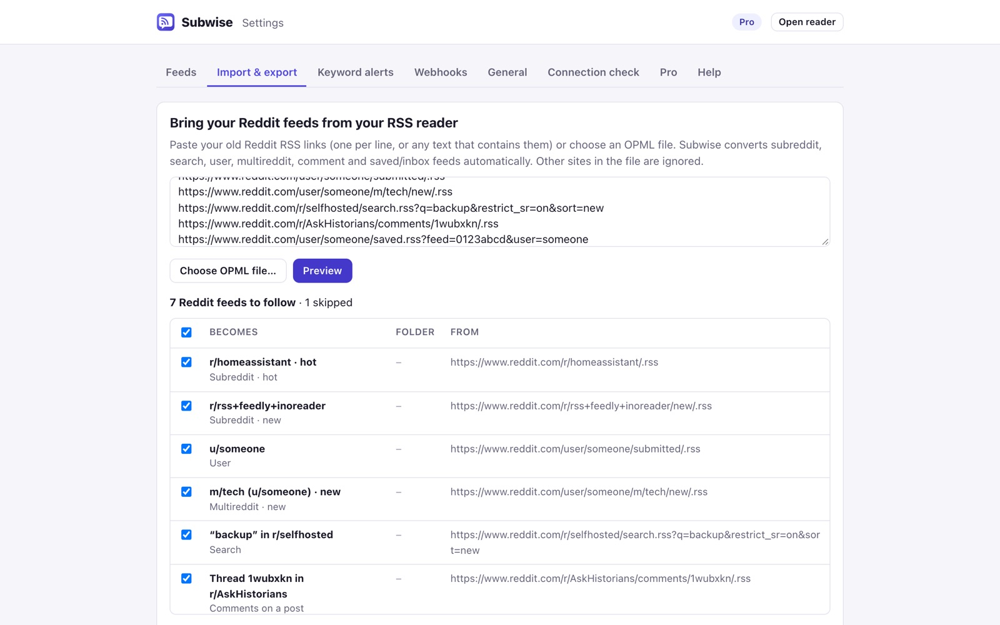

Move your Reddit feeds out of your RSS reader
Every RSS reader can export your subscriptions as an OPML file. Subwise reads that file, picks out the Reddit feeds, converts each one, and keeps your folders. Everything else in the file is ignored, so you can keep using your reader for the rest of the web.
1. Export from your reader
| Reader | Where |
|---|---|
| Feedly | Settings → OPML → Export, or open feedly.com/i/opml |
| Inoreader | Preferences → Import/Export → Export OPML |
| NetNewsWire | File → Export Subscriptions… |
| The Old Reader, NewsBlur | Settings → Export (OPML) |
| FreshRSS | Subscription management → Import / export → Export |
| Miniflux | Settings → Import page → Export subscriptions |
| Tiny Tiny RSS | Preferences → Feeds → OPML → Export |
| Thunderbird | Right-click the feed account → Subscribe → Export |
No OPML? Copy the Reddit feed addresses one by one and paste them, one per line. Subwise also accepts plain names like r/selfhosted.
2. Import into Subwise
- Open Subwise’s Settings → Import & export.
- Click Choose OPML file… (or paste addresses) and then Preview. You’ll see what each feed becomes, the folder it goes in, and anything that was skipped and why.
- Click Import selected. Subwise checks the new feeds gradually over the next minutes, to stay gentle on Reddit.

The free plan follows 10 subreddits, users or searches. If your file has more, they’re all added and the extra ones wait, paused, until you upgrade, so you don’t lose your list.
What converts
Subreddit feeds in any sort, combined subreddits, searches, user posts and comments, multireddits, comment threads, subreddit comment feeds, domain feeds, and your private front page, saved posts and inbox. Private feed tokens (feed=…) are dropped; Subwise reads those feeds through your logged-in session. Moderator queue feeds aren’t supported.